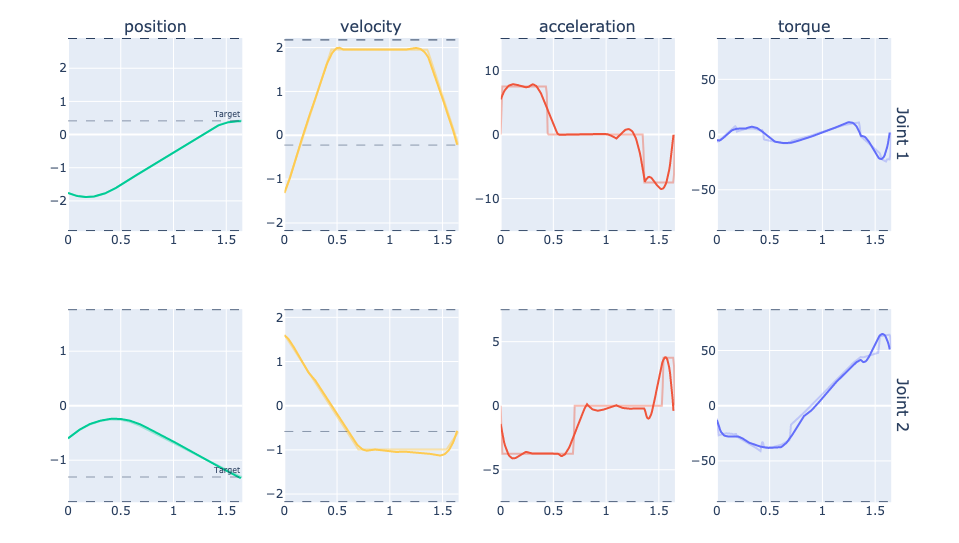

This project is part of DARKO, a European project researching new
agile ways to control robots in dynamic environment. My lab is working on the algorithms to execute throwing motions,
allowing the robot to increase its reachability and productivity. I was tasked to work on the control and planning
of the throwing trajectories.
Throwing motion
The problem of chosing a throwing motion is highly dimensional: given a target position,
there are many ways to throw an object to reach the target, with different angles, velocity and release position.
Our robot arm was mounted on an omni-directional platform,
so all throwing configurations can be reached. A separate program was thus developed by
Yang Liu to find all these configuration,
and select the best one in real-time. This throwing configuration is transformed into a target joint position and velocity
\(\vec{x_t}=\begin{pmatrix} \vec{q_t} \\ \dot{\vec{q_t}} \end{pmatrix}\),
which is then given to the planner to be reached.
The motion planner takes this target position and velocity, and creates a trajectory that reaches it from the
current position and velocity \(\vec{x_0}\). As there are an infinite number of trajectories that connects these two state, we search
for the minimum time one. In this problem, we use the robot acceleration as the controlled variable \(\vec{u}\), which makes it
a classic double integrator problem:
\[ \dot{\vec{x}} = \vec{f}(\vec{x}, \vec{u}) = \begin{pmatrix} 0 & 1 \\ 0 & 0 \end{pmatrix} \vec{x} + \begin{pmatrix} 0 \\ 1 \end{pmatrix} \vec{u} \]
We add to that joint position, velocity and acceleration limits, and as a final twist, non-linear constraints on the torque \(\vec{\tau}\) and end-effector position \(\vec{p}\):
\[ \vec{\tau} = ID(\vec{x}) < \vec{\tau}_{max} \]
\[ p = FK(\vec{x}) \in B \]
\(ID(\vec{x})\) and \(FK(\vec{x})\) are the Inverse Dynamics and Forward Kinematics of the robot,
whose analytical value and Jacobian are provided
by the Pinocchio library.
The complete formulation of the problem is:
\[ \underset{\vec{x}, \vec{u}, \alpha}{min}( \int_{0}^{1} \alpha\,dt), \quad s.t:\]
\[
\begin{equation}
\begin{cases}
\vec{x}(0) = \vec{x}_0, \quad \vec{x}(1) = \vec{x}_t \\
\dot{\vec{x}} = \alpha \vec{f}(\vec{x}, \vec{u}) \\
\vec{\tau} = ID(\vec{x}) < \vec{\tau}_{max} \\
p = FK(\vec{x}) \in B \\
\vec{q} \le \vec{q}_{max}, \quad \dot{\vec{q}} \le \dot{\vec{q}}_{max}, \quad \ddot{\vec{q}} \le \ddot{\vec{q}}_{max}
\end{cases}
\end{equation}
\]
With \( \alpha \) a constant time scaling factor that is used to minimize the trajectory.

Example trajectory generated for the two first joints
This Optimal Control Problem is solved with Sequential Quadratic programming (SQP) using
PolyMPC, a fast MPC library written in
C++ by Peter Listov.
The complete algorithm was written in C++, which allowed to compute a new trajectory in 200ms.
This is enough for real-time replanning of the trajectory in case of a moving target or obstacles,
as you can see on the video below.
More importantly, this new planner is much more reliable than Ruckig,
the previous planner used which does not consider position limit and non-linear constraint.
Adding these constraints avoid the robot triggering its safety mode which happenned often with the previous planner,
and made impossible continous operation.
Example of reactive motion enabled with real-time planning